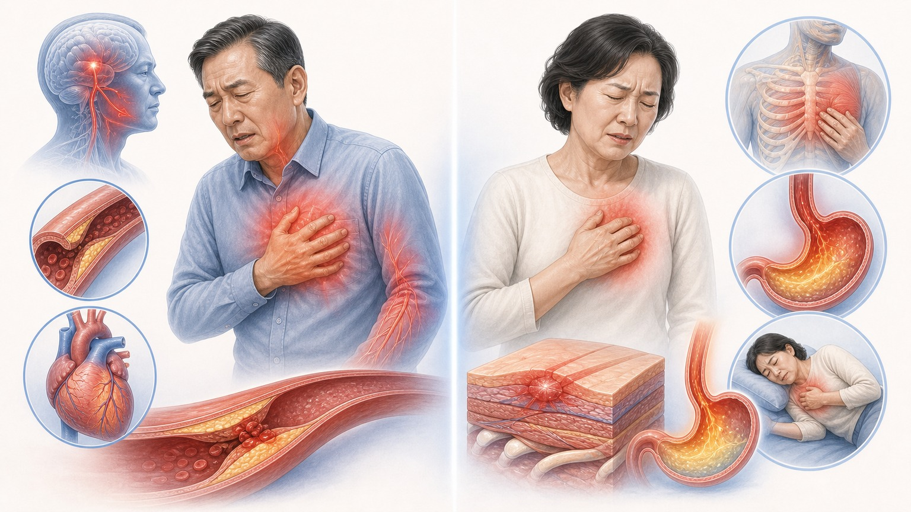
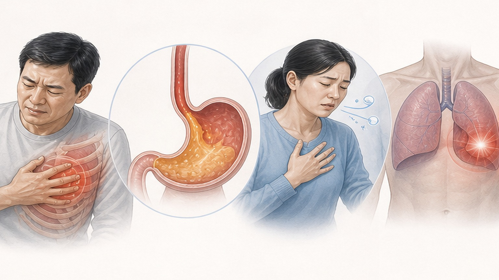
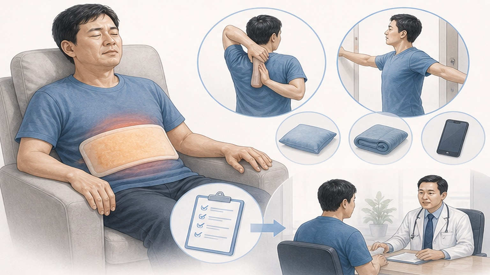
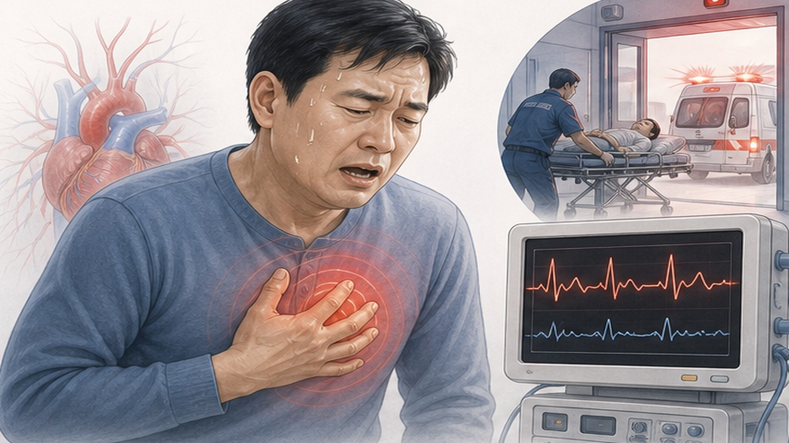

대부분은 근육·관절이나 소화기 원인이지만, 일부는 생명을 위협합니다
‘아프다’는 말 하나로는 부족합니다 — 이 네 가지를 말씀해 주세요
하나라도 의심되면 기다리지 말고 119
| 원인 | 이런 특징이 있습니다 |
|---|---|
| 급성 심근경색 | 가슴 가운데를 짓누르는 느낌이 5분 넘게, 어깨·턱·팔로 퍼지고 식은땀·구역질이 함께 |
| 대동맥 박리 | 갑자기 찢어지는 듯한 극심한 통증이 등·목으로 옮겨 가고, 양팔 혈압이 크게 다름 |
| 폐색전증 | 갑작스러운 숨참, 숨 쉴 때 찌르는 통증, 빠른 맥박 — 한쪽 다리 붓기·최근 수술이나 오래 누워 지냄 |
| 긴장성 기흉 | 갑자기 한쪽 가슴이 아프고 숨 쉴 때 심해지며 숨이 몹시 참 — 키 크고 마른 체형에 많음 |
| 심낭염·심장 압박 | 누우면 심해지고 앞으로 숙이면 나아짐, 목 혈관이 부풀고 혈압이 떨어지면 매우 위험 |
| 식도 파열 | 심하게 토한 직후 극심한 통증이 등으로 퍼지고, 목·가슴 피부 밑에서 뽀드득 소리 |
전형적인 통증 대신 숨참·피로·체한 느낌으로 오기도 합니다

대부분의 흉통은 이 네 영역에서 옵니다(비율은 대략)

통증의 모양과 함께 오는 증상으로 위험도를 가늠합니다
진료로 심장 등 다른 원인이 아니라고 들은 분에게 권합니다

근육·갈비뼈 흉통이라도 이것만은 하지 않습니다
| 하지 마세요 | 왜 |
|---|---|
| 갈비뼈를 복대·붕대로 꽉 감기 | 숨을 얕게 쉬게 되어 폐렴이 생길 수 있습니다 |
| 아프다고 얕은 숨만 쉬기 | 폐가 덜 펴져 합병증 위험이 있습니다 — 한 시간에 한 번 깊게 숨 쉽니다 |
| 무거운 물건 들기·상체 비틀기 | 다친 근육·관절에 다시 무리가 갑니다 |
| 통증을 참고 격한 운동 | 회복이 늦어지고 통증이 오래갑니다 |
| 스스로 판단해 병원을 미루기 | 위험한 원인을 놓칠 수 있습니다 |
| 처방 없이 진통제를 오래 먹기 | 위·콩팥 부작용이 생길 수 있어 기간을 정해 씁니다 |
하나라도 해당하면 약을 먹고 기다리지 말고 곧장 응급실로

흉통은 대부분 위험하지 않지만, 위험 신호를 알면 내 몸을 더 잘 지킬 수 있습니다
QR을 스캔하면 같은 자료를 휴대폰에서 다시 열 수 있습니다